HoustonTracker 2 Manual
The latest version of this document can be found online at
http://irrlichtproject.de/houston/manual.html
HoustonTracker 2 is a software sequencer that enables you to create music on Texas Instruments graphing calculators. It uses the machines' communication
port to
output multi-channel 1-bit music. Its interface is inspired by popular trackers such as LSDJ, Famitracker, and Milkytracker.
HT2 supports several models of the Z80-based line of TI calculators. It is mainly targetted at older, obsolete models like the TI-82, but also works on newer
machines up to and including the TI-84 Plus SE. For a complete list of supported models, see section
1.3. Supported Calculators.
• 3 tone channels
• 1 non-interrupting drum channel
• up to 128 note patterns
• up to 64 drum/fx patterns
• sequence length up to 255 pattern rows
• 16-bit frequency precision
• 8-bit speed precision, can be configured per step
• various effects, including:
- L/C/R stereo hard-panning for tone and drum channels
- 8bit duty cycle control
- duty cycle sweep
• 2 user definable samples
• up to 8 savestates
• edit during playback
The following table gives an overview over which TI calculator models are supported by HoustonTracker 2. If your calculator isn't listed in the table,
chances are HT2 doesn't support it.
| model |
ROM versions |
shell |
HT2 build |
status |
| TI-73, 73 Explorer |
all |
mallard |
- |
planned |
| TI-76.fr |
all |
Ion |
ht2.83p |
untested |
| TI-81 |
- |
- |
- |
not supported |
| TI-82 |
< 16.0 |
- |
- |
planned |
| TI-82 |
16.0-19.0 |
CrASH |
ht2.82p |
supported |
| TI-82 Parcus |
19.006 |
CrASH196 |
ht2p.82p |
broken |
| TI-82 Advanced |
- |
- |
- |
not supported |
| TI-82 Stats, Stats.fr |
all |
Ion |
ht2.83p |
supported |
| TI-82 Plus |
all |
DoorsCS |
ht2.8xp/ht2s.8xp |
supported |
| TI-83 (all versions) |
all |
Ion |
ht2.83p |
supported |
| TI-83 Plus (all versions) |
all |
DoorsCS |
ht2.8xp/ht2s.8xp |
supported |
| TI-84 Plus/Plus SE |
all |
DoorsCS |
ht2.8xp/ht2s.8xp |
supported |
| TI-84 Plus CSE/CE |
- |
- |
- |
not supported |
| TI-85, 86 |
- |
- |
- |
not supported |
| TI-89, 92, 92+, V200 |
- |
- |
- |
not supported |
| Note that the TI-82 Parcus is currently not
supported by HT2. The TI-83 Parcus model works fine, though. |
Models marked as "not supported" have differences in architecture that would require a major rewrite of HT2. There are no plans to support these models
in the near future, especially not the 84+ Color models.
HoustonTracker 2 is free, open source software. It is released under a "revised" BSD-License. This means you're basically free to use, modify, and
redistribute this software both in binary
as well as source form, as long as you don't pretend that I endorse what you're doing, or try to hold me responsible for any damage done.
The full license terms are as follows:
Copyright (c) 2015, utz^irrlicht project
All rights reserved.
Redistribution and use in source and binary forms, with or without
modification, are permitted provided that the following conditions are met:
* Redistributions of source code must retain the above copyright
notice, this list of conditions and the following disclaimer.
* Redistributions in binary form must reproduce the above copyright
notice, this list of conditions and the following disclaimer in the
documentation and/or other materials provided with the distribution.
* Neither the name of IRRLICHT PROJECT nor the
names of its contributors may be used to endorse or promote products
derived from this software without specific prior written permission.
THIS SOFTWARE IS PROVIDED BY THE COPYRIGHT HOLDERS AND CONTRIBUTORS "AS IS" AND
ANY EXPRESS OR IMPLIED WARRANTIES, INCLUDING, BUT NOT LIMITED TO, THE IMPLIED
WARRANTIES OF MERCHANTABILITY AND FITNESS FOR A PARTICULAR PURPOSE ARE
DISCLAIMED. IN NO EVENT SHALL THE COPYRIGHT HOLDER BE LIABLE FOR ANY
DIRECT, INDIRECT, INCIDENTAL, SPECIAL, EXEMPLARY, OR CONSEQUENTIAL DAMAGES
(INCLUDING, BUT NOT LIMITED TO, PROCUREMENT OF SUBSTITUTE GOODS OR SERVICES;
LOSS OF USE, DATA, OR PROFITS; OR BUSINESS INTERRUPTION) HOWEVER CAUSED AND
ON ANY THEORY OF LIABILITY, WHETHER IN CONTRACT, STRICT LIABILITY, OR TORT
(INCLUDING NEGLIGENCE OR OTHERWISE) ARISING IN ANY WAY OUT OF THE USE OF THIS
SOFTWARE, EVEN IF ADVISED OF THE POSSIBILITY OF SUCH DAMAGE.
The following section outlines some basic terms and conventions used in HoustonTracker 2, and in this documentation.
Keypress conventions
In this document, keypresses are denoted in bold font, surrounded by square brackets. All keypresses in HT2 are sequential, meaning you
never need to press more than one key at the same time.
For example, [ALPHA], [GRAPH], [ENTER] means you should first press the ALPHA key, then the GRAPH key, and finally the ENTER key.
Hexadecimal notation
Hexadecimal numbers in this document are prefixed with 0x. So 0x20 = $20 = 20h = 32 decimal.
All numbers in the HoustonTracker 2 user interface itself are hexadecimal, therefore no prefix is used there.
Terminology
| bit | This humble binary digit is at the core of HT2's inner workings. It can take a value of 0 (off) or 1 (on). |
|---|
| byte | Not related to chewing by any means, the byte is an 8-bit number. It can take any value from 0x00 (decimal 0) to 0xFF (255). |
|---|
| duty cycle | The relative amount of time each of the two half-periods of a square wave will consume. |
|---|
| hi-byte | The left two hexadecimal digits, aka most significant byte of a word. |
|---|
| lo-byte | The right two hexadecimal digits, aka least significant byte of a word. |
|---|
| nibble | A single hexadecimal digit. It consists of 4 bits, and can therefore take a value from 0x0 to 0xF (15). |
|---|
| pattern | A list of events that makes up a part of a tune. These can be notes, drum triggers, or effect commands. All patterns in HT2 are
16 steps long. |
|---|
| pitch | The (perceived) frequency of a note. |
|---|
| shell | A program that facilitates the execution of machine language programs on your TI calculator, among other things.
You'll need to install one in order to run HT2. |
|---|
| song sequence | A matrix containing the order of patterns. Think of it as a storyboard, or the song's masterplan. |
|---|
| word | A 16-bit value. Equivalent to two bytes, or four hexadecimal digits. |
|---|
Hardware
- a TI graphing calculator (see
1.3. Supported Calculators)
- a suitable PC<->Calc link cable, e.g.
TI SilverLink (recommended),
TI GraphLink,
homemade
parallel
or
serial cable
- a 2.5mm (micro-)jack adapter/cable
| You can use a cheap calc-to-calc link cable to make your own 2.5mm adapter. |
| The plastic base of many adapters is too thick to fit into
TI's extra narrow socket. If that's the case, you need to carefully scrape off some plastic from the base of the jack until it fits. |
Software
In addition to the HT2 executable, you will also need to obtain:
- TI linking software for exchanging data between your PC and your calc (recommended:
TiLP)
- a so-called "shell" for your calculator. The following table lists the recommended shells for each model. Other shells may work, but haven't been tested.
| HT2 is not compatible with MirageOS. |
| If you don't own a TI calc, you can run HT2 on an emulator. The beta version of tilem2 is recommended.
A Win32 installer can be found here, *nix users can obtain the
development version via svn checkout https://tilem.svn.sourceforge.net/svnroot/tilem/trunk tilem. You need to have TiLP installed in any case. |
| After installing HoustonTracker 2, your calculator will not be able to perform most of its regular tasks until HT2 is
removed.
Do not install HT2 if you need to use your calculator for regular work, such as in school or university. |
The following instructions assume that you have TiLP installed on your computer. If you are using another linking program, then you probably
know what to do...
Installing on TI82
Step 1: Reset your calculator by pressing [2nd], [+], [3].
Step 2: Switch off your calculator, and connect it to your computer with a link cable.
Step 3: Switch the calculator back on.
Step 4: On your computer, open TiLP. Make sure your calculator and link cable settings are correct - if not, press Ctrl+D to reconfigure.
Step 5: Put your calculator into transmission mode by pressing [2nd], [X,T,Θ], [▸], [ENTER].
Step 6: In Tilp, go to "File"->"Restore", and select CRASH.82B from the CrASH package. Doing so will prompt for confirmation on both TiLP and your calc.
Step 7: Assuming all went good, you can now put your calc in transmission mode again, and send ("File"->"Send Files") ht2.82p.
| If you intend to use a SilverLink cable in conjunction with a TI-82, do not install the official TI connectivity
software on your computer. If you currently have
TI Connect installed, or had it installed in the past, make sure you fully remove all of its components, especially the USB driver that came with it. |
Installing on TI83/TI82Stats
Step 1: Reset your calculator by pressing [2nd], [+], [5].
Step 2: Switch off your calculator, and connect it to your computer with a link cable.
Step 3: Switch the calculator back on.
Step 4: On your computer, open TiLP. Make sure your calculator and link cable settings are correct - if not, press Ctrl+D to reconfigure.
Step 5: Put your calculator into transmission mode by pressing [2nd], [X,T,Θ,n], [▸], [ENTER].
Step 6: In Tilp, go to "File"->"Send Files", and select ION.83G from the Ion package.
Step 7: After Ion has been received by the calculator, quit the link menu with [2nd], [MODE]. Now press [PRGM], select "ION", and press [ENTER].
Step 8: Press [2nd], [+], [2], [7]. Select ION and press [ENTER] to delete it. Likewise, delete IONZ.
Step 9: Assuming all went good, you can now put your calc in transmission mode again, and send ("File"->"Send Files") ht2.83p.
Installing on TI83 Plus/TI84 Plus
Step 1: Reset your calculator by pressing
[2nd],
[+],
[7],
[▸],
[▸],
[ENTER].
Step 2: Switch off your calculator, and connect it to your computer with a link cable. This will switch your calc back on.
Step 3: On your computer, open TiLP. Make sure your calculator and link cable settings are correct - if not, press Ctrl+D to reconfigure.
Step 4: In Tilp, go to "File"->"Send Files", and select DoorsCS7.8xk from the DoorsCS package.
Step 5: Assuming all went good, you can now send ("File"->"Send Files") ht2.8xp.
| If you don't have enough free memory because you have a large number of archived apps, you can install
ht2s.8xp instead. |
|
For faster access, you can use TiLP in GUI-less mode. To do so, open a command prompt (cmd.exe on Win or any shell on *nix),
and enter the following command:
tilp [calc-model] [cable-model] [filename]
So, to send HT2 to your TI83 Plus via a SilverLink cable, you would type
tilp ti83+ SilverLink ht2.8xp
|
Once you've successfully installed HT2, running it is very simple.
Step 1: Press
[PRGM] (TI82/83), resp.
[APPS] (TI83 Plus/84 Plus).
Step 2: Select "CRASH" (TI82), "A" (TI83), resp. "DoorsCS" (Plus models), and press
[ENTER].
Step 3: Make sure HoustonTracker 2 is highlighted, and press
[ENTER] again. Unless an error occured, HT2 is now running.
Step 4: Now plug in your audio cable or headphones.
After exiting HT2 with keys
[ALPHA],[ON], you will be returned to the Shell. Press
[MODE] (CrASH, Ion) resp.
[CLEAR] (DoorsCS) to exit
it.
| On TI83/8x Plus, booting and shutting down HT2 will take up to 10 seconds. |
The following section will explain how to get started with HoustonTracker 2 in 10 easy steps.
If you can't be bothered to read the whole manual, and want to get started with HT2 in 5 minutes, then this section is for you.
Step 1: Start Houston Tracker, and plug in your audio/headphone cable. Check the
previous sections if you can't figure out
how to do that.
| Always plug in headphones after you've started HT2. |
Step 2: Enter some patterns into the song sequence. To do so, press the following keys:
[0],[0],[0],[1],[0],[2],[0],[0].
Your main screen should now look like this:
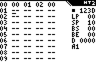
Step 3: Move the cursor up to the first position in the sequence again. Now press
[2nd]. This will bring up the pattern screen.
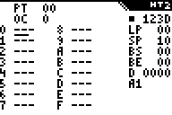
Step 4: Let's activate RowPlay mode, so we can hear what we're doing. Press
[ALPHA],[MODE],[ALPHA].
Step 5: Ok, let's put some notes into this pattern thing. Press
[PRGM],[PRGM].
Step 6: Wow, that's a pretty low note. Let's change the octave by pressing
[GRAPH],[2]. Now we can enter some more notes, for example
by pressing
[PRGM],[PRMG],[SIN],[SIN],[TAN],[TAN].
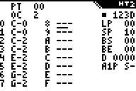
Step 7: Press
[ENTER] to hear what we've got so far.
Step 8: Hmmm, sounds pretty boring, right? So let's spice things up with some drums. Press
[2nd] to go back to the main screen.
Now move the cursor all the way to the right, and press
[2nd] again. This will bring up the FX pattern screen.
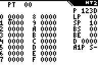
Step 9: Press
[1],[▾],[2],[2],[1],[▾],[2],[2],[1],[▾],[2],[2],[▾],[2],[▾],[2].
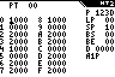
Step 10: Congratulations, you've just composed your first "song" in HoustonTracker 2!
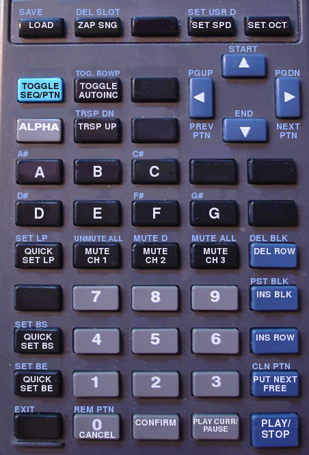
| key |
standard function |
ALPHA mode function |
Description |
| |
| [ON] |
- |
QUIT |
Exit HT2. The current tune will be preserved in memory. You can only exit when music isn't playing. On TI83/8x Plus, this will take a few moments. |
| |
| [Y=] |
LOAD |
SAVE |
Load a song. Will prompt for a save slot number (0..7). Needs to be CONFirmed.
In ALPHA mode, save the current song. Will prompt for a save slot number (0..7). Needs to be CONFirmed. |
| [WINDOW] |
ZAP SONG |
DEL SLOT |
Clears the current tune. Needs to be CONFirmed.
In ALPHA mode, prompt for a save slot number (0..7) and deletes it. Needs to be CONFirmed. |
| |
| [.] |
CONFIRM |
- |
Confirm action. (Cancel action with key [0].) |
| |
| [2nd] |
TOGGLE SEQ/PTN |
- |
Toggle between sequence and pattern view. When used on sequence view, it will display the pattern selected by the cursor. |
| [ALPHA] |
ALPHA MODE ON |
ALPHA MODE OFF |
Toggle ALPHA mode on and off.
TIP: When music is playing, you can hold down this key to pause the playback. |
| [MODE] |
TOGGLE AUTOINC |
TOGGLE ROWPLAY |
Toggle automatic cursor increment on/off (on by default).
In ALPHA mode, toggle playing notes while editing (off by default). Beware that RowPlay may ignore effect settings under certain circumstances. |
| |
| [▴] |
MOVE UP |
JUMP TO START |
Move cursor up. In ALPHA mode, jump to row 00 of the sequence. |
| [▾] |
MOVE DOWN |
JUMP TO END |
Move cursor down. In ALPHA mode, jump to the last rows in the sequence. |
| [◂] |
MOVE LEFT |
PGUP/PREV PTN |
Move cursor left. In ALPHA mode, move one page (10 lines) up in sequence.
On pattern screens, cycle through patterns in ALPHA mode. |
| [▸] |
MOVE RIGHT |
PGDOWN/NEXT PTN |
Move cursor right. In ALPHA mode, move one page (10 lines) down in sequence.
On pattern screens, cycle through patterns in ALPHA mode. |
| |
| [ENTER] |
PLAY/STOP |
- |
Start playing from row 00, or stop playback if player is running. |
| [(-)] |
PLAY CURR/ PAUSE |
- |
Start playing from the current position in sequence, or hold down to pause playback while player is running. |
| |
| [0] |
0/DEL NOTE/CANCEL |
REMOVE PTN |
Depending on context, either input 0 at cursor, delete a note, or cancel action.
On the Sequence screen and with ALPHA mode active, remove the currently selected pattern from the sequence. |
| [1]..[9] |
1..9 |
- |
Input 1..9 at cursor. |
| [MATH] |
A |
A# |
Input hex digit A or note A at cursor, depending on the context. While setting notes and being in ALPHA mode, input an A#. |
| [MATRIX]/[APPS] |
B |
- |
Input hex digit B or note B at cursor, depending on the context. |
| [PRGM] |
C |
C# |
Input hex digit C or note C at cursor, depending on the context. While setting notes and being in ALPHA mode, input a C#. |
| [x⁻¹] |
D |
D# |
Input hex digit D or note D at cursor, depending on the context. While setting notes and being in ALPHA mode, input a D#. |
| [SIN] |
E |
- |
Input hex digit E or note E at cursor, depending on the context. |
| [COS] |
F |
F# |
Input hex digit F or note F at cursor, depending on the context. While setting notes and being in ALPHA mode, input an F#. |
| [TAN] |
G |
G# |
Input note G at cursor. While setting notes and being in ALPHA mode, input a G#.
This key does nothing in sequence/fx ptn view. |
| |
| [,] |
MUTE CH1 |
UNMUTE ALL |
Mute/unmute channel 1. In ALPHA mode, unmute all channels. |
| [(] |
MUTE CH2 |
MUTE DRUMS |
Mute/unmute channel 2. In ALPHA mode, mute/unmute drum channel. |
| [)] |
MUTE CH3 |
MUTE ALL |
Mute/unmute channel 3. In ALPHA mode, mute all channels. |
| |
| [TRACE] |
SET SPEED |
SET USR DRUM |
Set the global song speed.
In ALPHA mode, set the user drum pointer. Any value between 0x0000 and 0xFFFF is permitted. However,
it is recommended to stick with values in the range of 0x0000 - 0x7FFF, as higher values may produce unpredictable results. |
| [GRAPH] |
SET OCTAVE |
- |
Set the current octave. Only works on note pattern screens. Valid values are 0..6. |
| |
| [X,T,Θ] |
TRANSPOSE UP |
TRANSPOSE DOWN |
Transpose current pattern up by one half-tone. In ALPHA mode, transpose current pattern down by one half-tone.
Out-of-range notes will be replaced with rests. |
| |
| [x²] |
QUICK SET LP |
SET LP |
Set the loop point to the current row in sequence. Only works on sequence screen.
In ALPHA mode, enter a new LP value. Changes will not
take effect until the next player restart. |
| |
| [LN] |
QUICK SET BS |
SET BS |
Set Block Start to the current row in sequence. Only works on sequence screen.
In ALPHA mode, enter a new BS value. |
| [STO►] |
QUICK SET BE |
SET BE |
Set Block End to the current row in sequence. Only works on sequence screen.
In ALPHA mode, enter a new BE value. |
| |
| [÷] |
DEL ROW |
DEL BLOCK |
Delete the current row.
In ALPHA mode, delete the selected block. |
| [×] |
INS BLOCK |
PASTE BLOCK |
Insert a copy of the selected block at the cursor.
In ALPHA mode, paste selected block over the current and following rows.
The target row must be outside of the selected block. |
| [-] |
COPY ROW |
- |
Insert a copy of the current row at the cursor. |
| [+] |
PUT NEXT FREE |
CLONE CURR |
Put the next unused free pattern in sequence at the current position.
In ALPHA mode, clone the current pattern and insert the
clone at the current cursor position. |
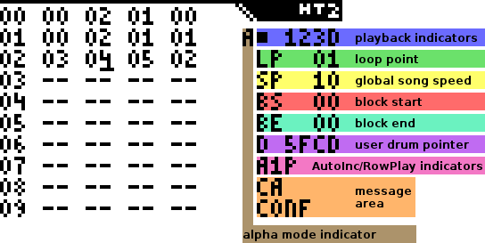
Modes and Indicators
There are a number of different indicators, which will tell you about various modes and editing settings that are currently applied.
The
Alpha mode indicator comes in the shape of a capital letter A, which is displayed below the diagonal left edge of the
HT2 logo.
When the A is visible, then Alpha mode is active. The Alpha mode is HT2's version of the SHIFT key on a PC - except that you press it
before pressing
another key, not together with the second key.
Many keys in HT2 have a primary and secondary function.
In Alpha mode, the secondary functions will be triggered. You can toggle Alpha mode on and off by pressing - you guessed it -
[ALPHA]. Alpha mode
will be turned off automatically once an Alpha mode action has been performed.
The
playback indicators are located directly below the HT2 logo. The first position tells you if the music player is
currently stopped or running. While stopped, it will display a ■, when running, it will display the capital letter P. Next to this position, you
will find four positions which normally read "123D" (for channel 1, 2, 3, and drums respectively). These positions indicate which channels are currently
muted. Muted channels will display a "-" instead of their channel number/letter.
The
AutoInc/RowPlay indicators tell you whether the auto-incrementing and RowPlay functions are currently activated. They
are located in the lower third of the right screen side, just below the the global variables. The
AutoInc indicator displays "A1" when
auto-incrementing is
active, and A0 when inactive. Auto-incrementing means that after you enter a value or note in HT2, the cursor will automatically advance to the next position.
You can toggle AutoInc with key
[MODE]. The
RowPlay indicator tells you whether RowPlay mode is currently active. If so, it will display the
capital letter P. When entering a note, HT2 will
automatically play the current pattern position (including all channels that are not muted). You can toggle RowPlay by pressing
[ALPHA], [MODE].
| RowPlay mode can't reliably detect all effect settings that apply to the current position, so depending on the
circumstances,
it may not reflect how the position will actually sound when the whole song is played back. |
Below the AutoInc/RowPlay indicators, there is the general purpose
message area. Here, various important messages will be
displayed, such as occuring errors, or requests for the user to confirm an action. Confirming is done with key
[.], cancelling is done with key
[0].
Global Variables
The
loop point defines what row in the sequence the player will loop back to after it has reached the end of the song.
Pressing
[x²] will set the loop point to the row currently highlighted by the cursor. To set it to another row, press
[ALPHA], [x²],
then enter a 2-digit hex number.
The
global song speed can be changed by pressing
[TRACE], followed by a 2-digit hex number. Generally, the higher
the number, the lower the speed. However, 0x00 is an exception. It is the slowest possible setting, equivalent to a speed of 0x100.
To set the
user drum pointer, press
[ALPHA], [TRACE], followed by a 4-digit hex number.
See the section on
drums for
details about the user drum pointer.
| Changes to the global variables are not effective until you restart the player. |
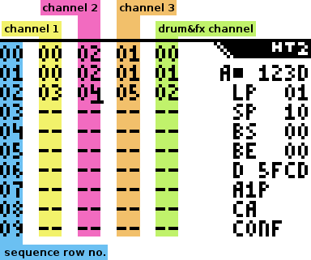
The sequence screen is where you build the general structure of your song. It consists of four editable columns, each containing a list of patterns.
Each column represents a different channel. To toggle between the main (sequence) screen and the pattern screens, select a pattern in the sequence
with the cursor, then press
[2nd].
The first 3 columns represent the 3 tone channels, ie. they contain
note patterns. The last channel represents the drum channel and
effects settings, ie. it contains
fx patterns.
The tone channels differ somewhat in sound and features.
Channel 1 features the
A0x effect, which adds noise and/or glitchy
sounds to the regular tone.
Channel 2 is somewhat louder than the other channels, and features a SID-style duty cycle sweep effect.
Channel 3 features hi-speed pitch slides. All channels support a variable duty cycle.
Moving around on the sequence screen
Keys [▴], [▾], [◂], and [▸] move the cursor around on the sequence screen.
Pressing [ALPHA], [◂] resp. [ALPHA], [▸] will move the cursor up/down by 10 rows.
Pressing [ALPHA], [▴] will move the cursor to the start of the sequence. Likewise, pressing [ALPHA], [▾] mode will move
the cursor to the end of the sequence.
Editing the sequence
Use keys
[0]..
[9] and
A..
F (
[MATH],
[MATRX] resp.
[APPS],
[PRGM],
[x⁻¹],
[SIN], and
[COS]) to enter pattern numbers. You can have a maximum of 128 note patterns, and 64 fx patterns, so the
highest pattern numbers are 0x7F and 0x3F respectively. Note patterns are shared across all 3 tone channels, so you can use any note pattern on any channel.
If you try to enter an invalid pattern number, HT2 will automatically replace it with an arbitrary valid one.
| Note patterns and fx patterns use a different numbering, e.g. note pattern 01 is
different from fx pattern 01. |
To automatically put the first unused pattern at the current sequence position, press
[+]. To clone the pattern at the current position (copy it's
contents to a new, unused pattern), press
[ALPHA], [+].
To delete the pattern number at the current position, press
[ALPHA], [0].
You can press
[-] to copy the current row. This will insert the copy at the current position.
Press
[÷] to delete the current row.
| Pressing play on a sequence row that has empty positions will have undesired side effects. |
Block Operations
HT2 uses two block markers, block start (BS) and block end (BE) to select a section of sequence data for copying, pasting, and cutting.
Block operations work only on the whole sequence, not on individual channels.
To set the block start to the current row in the sequence, press [LN]. Likewise, to set the block end to the current row, press [STO►].
Pressing these keys in [ALPHA] mode will allow you to set the BS/BE positions manually.
To copy the marked block and insert it at the current cursor position, press [×]. Pressing [ALPHA], [×] will
paste the block over the following sequence rows. Note that you cannot insert/paste a block into itself, so the target must always be outside the selected
block.
Press [ALPHA], [÷] to delete the selected block and move the following sequence data up.
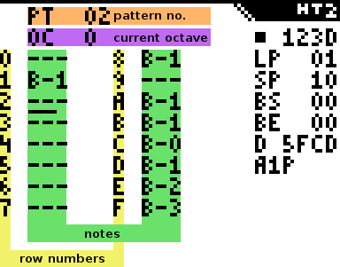
All note patterns have a fixed length of 16 steps, which are organized in two columns à 8 steps.
Notes can be entered with keys
[MATH] (A),
[MATRX] resp.
[APPS] (B),
[PRGM] (C),
[x⁻¹] (D),
[SIN] (E),
[COS] (F), and
[TAN] (G). Sharp notes (black keys) can be reached with
[ALPHA] + note key.
In order to hear notes while you're entering them, you can toggle
RowPlay by pressing
[ALPHA], [MODE]. A "P" will be displayed
next to the AutoInc indicator to let you know that RowPlay is active. Note that RowPlay is somewhat
limited. Among other things, it may ignore current effect settings. Also, it will fail if the pattern you're editing is not on the current step in the song
sequence.
To change the current octave, press
[GRAPH], then enter a number between 0 and 6. You can also edit octaves manually in the pattern.
| You can cycle through note patterns with [ALPHA], [◂] and [ALPHA], [▸].
|
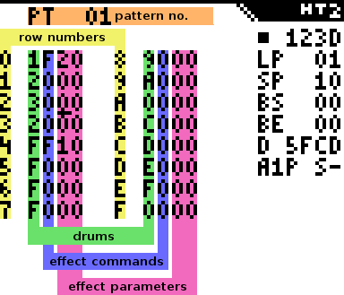
Like with note patterns, fx patterns are organized in two columns à 8 steps. Each step consists of four hex digits.
The
first digit sets the drum sound to be used on that step. A value of 0 means no drum. Refer to the
following section
to learn more about drums in HT2.
The
second digit sets the effect command. A value of 0 means no effect. Finally, the
last two digits set the effect parameters.
Refer to
section 4.3.4.2 to learn all about effects.
There are 15 different drums to chose from (0x1..0xF). Some of the drums use the TI-OS as sample data, so their sound may vary across
different calculator models.
Drums can be played in different modes, which affects the way they sound. Use command Cxx to change the drum mode, with xx = 0x00..0x4f. There are 80
different drum modes, though not all of them are particularly useful.
Setting a non-zero value for the
lower nibble of the parameter causes the drum data to be manipulated in various ways. Refer to
Appendix C for details about this functionality.
The
upper nibble of the parameter
defines the behaviour of the drum data pointer. The effects are as follows:
| mode | command | effect |
|---|
| 0 | C00 | Increment pointer, ie. use the "standard" drum set. |
| 1 | C1x | Decrement pointer, ie. use the "alternative" drum set. Generally speaking, these drums are less useful than the standard set.
Also, some drums will produce unpredictable results, namely drum 0, 1, C, and D. |
| 2 | C2x | Increment and loop pointer. Even less useful than mode 1, and suffers from the same problems. Also, this mode causes a slight
global pitch shift. |
| 3 | C3x | Decrement and loop pointer. Like mode 2, with different sounds. |
| 4 | C4x | Don't move pointer. Instead of drums, in this mode triggering a drum will play a fixed, most likely out-of-tune frequency.
This mode causes a slight
global pitch shift. |
Drum 0xE and 0xF are special cases.
0xF is the user drum pointer, which can be configured individually. To change it, press
[ALPHA], [TRACE].
The user drum
pointer
can be set to any value between $0000 and $FFFF. However, if you want to play it safe you should keep the pointer in range 0x0000 - 0x7FFF. This is because
the user drum
is actually a pointer to ROM/RAM. Pointing the user drum to RAM (0x8000 and up) will give unpredictable results, as the RAM contents change frequently.
0xE is the user defined sample. This feature is a bit quirky in use. In order to create a custom sample, go to FX pattern 0x20. Now, instead of entering
the usual drum triggers, fx commands, and fx parameters, you enter your sample data. You can use more than one pattern, so after you've filled up FX pattern
0x20, go to 0x21.
The data is in 1-bit PWM format, meaning each byte denotes a phase length.
Think of it as the amount of time taken until the beeper output will toggle again. The values are inverse, ie. a lower value denotes a longer phase.
Yes, it's a bit confusing... As an example, this is what drum sample 1 (the kick drum) looks like:
0x80, 0x80, 0x70, 0x70, 0x60, 0x60, 0x50, 0x50, 0x40, 0x40, 0x40, 0x30, 0x30, 0x30, 0x30, 0x20, 0x20, 0x20, 0x20, 0x20,
0x10, 0x10, 0x10, 0x10, 0x10, 0x10, 0x8, 0x8, 0x8, 0x8, 0x8, 0x8, 0x8, 0x4, 0x4, 0x4, 0x4, 0x4, 0x4, 0x4, 0x4, 0x2, 0x2, 0x2, 0x2, 0x2, 0x2, 0x2, 0x2, 0x2,
0x0
This will give you a waveform looking like this:
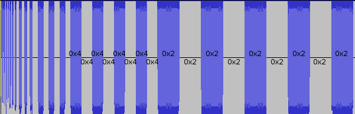
| The last byte of the sample must be 0.
|
| You can even define a second drum sample, which you can then trigger in drum mode C1x/C3x. This sample also starts at
FX pattern 0x20, but needs to be written backwards,
so the second byte of the sample is on the last position (FX parameter of the last row) of FX pattern 0x1F, third byte is just before that (drum/FX command
of the last row),
and so forth.
|
| command |
effect |
description |
| 1xy |
SET PAN |
Set panning for all channels. To determine how the panning will be set, you need to look at the individual bits of the effect parameter, starting
at the rightmost one (aka bit 0).
bit 0 set: pan channel 1 right (add 0x01 to parameter)
bit 1 set: pan channel 1 left (add 0x02 to parameter)
bit 0,1 reset: pan channel 1 center (don't add anything to parameter)
bit 2 set: pan channel 2 right (add 0x04 to parameter)
bit 3 set: pan channel 2 left (add 0x08 to parameter)
bit 2,3 reset: pan channel 2 center (don't add anything to parameter)
bit 4 set: pan channel 3 right (add 0x10 to parameter)
bit 5 set: pan channel 3 left (add 0x20 to parameter)
bit 4,5 reset: pan channel 3 center (don't add anything to parameter)
bit 6 set: pan drums right (add 0x40 to parameter)
bit 7 set: pan drums left (add 0x80 to parameter)
bit 6,7 reset: pan drums center (don't add anything to parameter)
Example:
| command | bitmask | calculation | effect |
| 100 | 00000000 | 0x00 + 0x00 + 0x00 + 0x00 = 0x00 | pan all channels to center |
| 155 | 01010101 | 0x01 + 0x04 + 0x10 + 0x40 = 0x55 | pan all channels right |
| 112 | 00010010 | 0x02 + 0x00 + 0x10 + 0x00 = 0x12 | pan ch1 left, ch2 center, ch3 right, drums center |
If you're having trouble figuring out the right values, you can use this online tool by garvalf to calculate the parameters.
|
| 2xx |
PITCH SLIDE UP CH3 |
Cause a (rather fast) upward pitch slide on channel 3.
xx defines the speed of the slide, lower values mean slower slides. xx can be any value, but beware that the pitch counter will eventually wrap.
200 switches off the effect.
|
| 3xx |
PITCH SLIDE DOWN CH3 |
Cause a very fast downward pitch slide on channel 3. Using this will disable effect 9xx.
xx defines the speed of the slide, higher values mean slower slides. xx can be any value, but beware that the pitch counter will eventually wrap, after which the pitch will start to slide upwards.
300 switches off the effect.
|
| 4xx |
DUTY CYCLE/ NOISE CH1 |
Set the duty cycle for channel 2, and toggle noise mode.
xx <= 0x80 - set duty cycle and disable noise mode (equivalent to additionally setting A00 command)
xx > 0x80 - set duty cycle and enable noise mode (equivalent to additionally setting A01 command).
|
| 5xx |
DUTY CYCLE/ SWEEP CH2 |
Set the duty cycle for channel 2, or enable duty cycle sweep.
xx <= 0x80 - set duty cycle and disable duty cycle sweep. A value of 0x80 produces the default 50:50 wave. Very low/high values will cause glitches.
xx > 0x80 - enable SID-style duty cycle sweep.
|
| 6xx |
DUTY CYCLE CH3 |
Set the duty cycle for channel 3.
xx can be any value, but very low/high values will cause glitches. A value of 0x80 produces the default 50:50 wave.
|
| 8xx |
EXEC NOTE TABLE CH3 |
Execute a given pattern as a note table for channel 3. This effect operates on a per-tick basis, and will always execute (even on rests). Execution starts after the first tick.
xx is the pattern to be executed as note table. If the current speed is greater than 0x10, table execution will continue at the following
pattern.
To disable the effect, set xx to a value greater than 0x7F.
Using this effect will disable the Cxx (note cut ch1) effect.
|
| 9xx |
GLITCH CH3 |
Add a nasty glitch effect to channel 3. Using this will disable effect 3xx.
xx can be any value, 900 turns off the effect.
|
| A0x |
ADD SFX CH1 |
Add a sound effect to channel 1.
A00 deactivates the effect.
A01 adds noise or glitchy sounds to channel 1. The actual outcome depends on the current pitch of ch1. To some extend, it's also influenced by the
currently active drum sound. It works best with high notes, especially A-5 and A-6.
A02 adds slight random inaccuracies to the pitch of channel 1. It has little effect by itself, but can be used to produce a phasing effect in
conjunction with other channels
set to the same note as ch1. The effect does not work equally well on all pitches, namely it won't do anything on C notes. |
| B00 |
BREAK PTN |
Break pattern and jump to the next position in the sequence. This command doesn't take any parameters. Also, it is ignored on the first line of a pattern. |
| Cxx |
NOTE CUT CH1 |
Cut the note on channel 1 after xx ticks. Using this effect can make the sound output slightly more noisy.
Use C00 to disable the effect.
Using this effect will disable the 8xx (exec note table ch3) effect. |
| Dxx |
DRUM MODE |
Set the drum mode, where xx is 0x00..0x4F. Refer to the drums section for details.
|
| E0x |
RESET FX |
Reset previous FX commands to default settings. This effect causes a slightly longer than normal delay when triggered.
E00 - reset all effects.
E01 - reset all effects except speed.
E02 - reset all effects except speed and duty cycles.
E03 - reset all effects except speed, duty cycles, and panning settings.
|
| Fxy |
SET SPEED |
Set the current speed. xy can be any hexadecimal number between 0x01 and 0xFF. The higher the value, the slower the speed. This command
temporarily overrides the global speed setting, but does not permanently change it.
TIP: When entering this effect while the player is running, make sure to enter the parameter first, and then the F command. |
Saving
To save your current work in progress, press [ALPHA], [Y=]. The letters "SA" will appear in the message area.
Now, enter the number of the save slot you want to save (0..7), and confirm by pressing [.]. (If you got here by accident, press [0]
to cancel.)
If the save was successful, error code E0 will be displayed in the message area. If the save was unsuccessful due to insufficient memory, error code
E2 will be displayed instead. Note that you may run out of memory rather quickly. You will always be able to maintain at least two save slots, however.
Loading
To load a previously saved tune, simply press [Y=]. The letters "LD" will appear in the message area.
Now, enter the number of the save slot you want to load (0..7), and confirm by pressing [.]. (If you got here by accident, press [0]
to cancel.)
The tune in question will be loaded, or error code E5 will be printed if the selected save slot was empty.
Deleting a save slot
In case you run out of memory, or want to get rid of one of your save slots for other reasons, you can specify a save slot to be deleted.
In order to do so, press [ALPHA], [WINDOW]. The letters "DS" will appear in the message area.
Now, enter the number
of the save slot you want to delete (0..7), and confirm by pressing [.]. (If you got here by accident, press [0] to cancel.)
And that's all you need to know about deleting save slots!
Backups
Creating a backup of your HT2 songs is trivial: Simply send the HT2 PRGM file to your computer or another calc of the same model.
The program file contains all the save slots as well as the currently loaded song.
In the future, there will be a PC utility for manipuling backup files.
If a major error happens, HT2 will attempt to detect it, and print an error code in the message area. An special error message will also be displayed if
saving a backup of the current song was successful.
The following table lists all possible error codes:
| code |
name |
description |
| E0 |
SAVE OK |
Saving backup was successful, no error occured. |
| E1 |
INVALID BLOCK |
Block End is set before Block Start, or the row where the block should be inserted/pasted to is within the selected block. |
| E2 |
INSUFFICIENT MEMORY |
There is not enough RAM to perform the desired action (usually saving). |
| E3 |
INVALID PTN |
An invalid pattern number was set in the song sequence. |
| E4 |
LP INVALID |
Invalid loop point. Row to loop to is empty. |
| E5 |
FILE I/O ERR |
Loading song failed. Save slot is empty or corrupt. |
| E6 |
SAVESTATE ERR |
Wrong savestate version, or savestate corrupt. |
| E7 |
NO FREE PTN |
Could not find a free pattern. |
| E8 |
BLOCK TOO LARGE |
The selected block is too large to be inserted. |
Small errors (like trying to set an inexistent note or an invalid pattern number) will be simply ignored by HT2.
Thanks to...
... TylerBarnes, Tronimal, garvalf, and Flashbob for beta testing
... extra thanks to garvalf for preparing the HT2 cheatsheet
... Shiru, introspec, and Alone Coder for their expertise and advice
... Brandon Wilson, Lionel Debroux, and everybody who has been hacking/documenting TI calcs
The TI-82 image that was used as the basis of the
keymap was authored by Martin Olsson, and is released under
a
GDFL/
Creative Commons BY-SA license.
The latest version of the HT2 source code can always be found at
github.com/utz82/HoustonTracker2
HoustonTracker 2 is developed under Linux. If you're running Linux or another *nix derivate, building HT2 is a matter of simply running the build script,
provided you have a few basic tools installed. If you're developing on Windows or another non-Posix compliant system, you'll need to provide your own build
script or build from hand.
Building Requirements
• The
Pasmo assembler must be installed and present in your search path (unless you want to adapt the
sources for another assembler).
• Optionally, you may want to install an TI calculator emulator. For *nix systems, using the development version of
tilem2 is recommended.
Building with the Build Script (*nix only)
It's as simple as opening a terminal, navigating to the folder containing HT2, and typing
./compile.sh -[model]
where [model] is one of
| 82 | build for TI-82 |
| 8p | build for TI-82 Parcus |
| 83 | build for TI-83, TI-82 Stats |
| 8x | build for TI-83 Plus, TI-84 Plus etc. |
| 8xs | build "small" version for TI-83 Plus, TI-84 Plus etc. |
| all | build all targets. |
Optionally, you can rebuild the note table
before running the build script. In order to do so, run the tablegen.sh
shell script. This will allow you to change HT2's base tuning.
In order to have the build script automatically run your builds in tilem2, uncomment the lines in compile.sh that look like this:
tilem2 -a -r "/path/to/your/romfiles/xyz.rom" -m [model] [buildfile]
Building by Hand
The following steps are required to build HT2 by hand:
1. Assemble the sources with the following command:
pasmo --equ MODEL=[model] --alocal main.asm main.bin
where [model] can be either 1 (TI-82 build), 2 (TI-83 build), 3 (Plus models build), or 4 (TI-82 Parcus build).
2. Pack the resulting main.bin into a TI executable (82p, 83p, 8xp) using a packer of your choice (bin8x, oysterpac.pl, etc...).
Work Area Data Format
The work area is where HT2 stores the currently loaded song. It begins at label "musicData", and is 5125 bytes in size. The actual address in memory
depends on the version of HT2.
| offset | length | description |
|---|
| +0 | byte | global speed |
| +1 | word | user drum pointer |
| +3 | byte | loop point |
| +4 | 1 KB | pattern sequence list. 1 byte per pattern. Order is ch1, ch2, ch3, fx. Empty positions contain 0xff. |
| +1028 | byte | one 0xFF byte to mark the end of the sequence list. |
| +1029 | 2 KB | note patterns. Each note pattern has an uncompressed length of 16 bytes. Empty positions contain 0x00. |
| +3077 | 2 KB | FX patterns. Each fx pattern has an uncompressed length of 32 bytes. Empty positions contain 0x00. |
Compressed Savestate Format
HT2 uses a very simple compression scheme to store song data backups. They are set up as follows:
| offset | length | description |
|---|
| +0 | byte | global speed |
| +1 | word | user drum pointer |
| +3 | byte | loop point |
| +4 | ? | pattern sequence list. 1 byte per pattern. Order is ch1, ch2, ch3, fx. |
| ? | byte | one 0xFF byte to mark the end of the sequence list. |
| ? | ? | note patterns.
if byte at offset >= 0xE0, then the following [byte - 0xDF] patterns are empty.
else, if byte at offset >= 0xD0, then the following [byte - 0xCF] rows are empty.
else, if byte at offset < 0xD0, it's a regular note value.
|
| ? | byte | one 0xFF byte to mark the end of the note pattern area. |
| ? | ? | FX patterns.
FX patterns are preceded by their pattern number. A pattern number of 0xFF signals that the savestate contains no FX patterns.
If bit 7 of the pattern number is set, it's the last pattern to be loaded. Setting bit 7 is optional if the last saved FX pattern is 0x3F.
|
Start and end addresses of backup savestates are stored in the savestate lookup table.
The following section describes how the multi-channel synthesis is achieved in HT2, and how the effects are produced.
General Notes
Sound mixing in HT2 is achieved through a 1-bit synthesis technique called Pulse Interleaving.
Typically, a 1-bit DAC can only output one single square wave frequency. What Pulse Interleaving does is interlace the multiple software channels
at a rapid rate. Due to their own hardware latency, common output devices such as speakers or headphones cannot fully adjust their speaker cones at this rate.
Therefore the cones will be left in a floating state between full extension and full contraction. This is how the
different volume levels needed to mix HT2's four software channels are achieved.
The average time taken to interlace one sample of all 4 channels is (1/16300)s, meaning channel states are swapped
at a rate of about 65200 Hz. The exact timings depend on various factors such as actual tone frequencies, effect and drum settings, hardware model,
and battery state.
Internally, three different methods are applied to generate the software channel outputs. Tone channel 2 and 3 share the same method, while channel 1 and
the drum channel use their own respective techniques.
Tone Channel 1
Once per interlacing cylce, a 16-bit constant (the "frequency base value") is added to a 16-bit counter. When the addition produces an overflow
(carry, result >0xFFFF), the channels' output stated will be toggled. This means of course that channel 1 has to keep a record of its own output state.
The A01 effect (noise/glitch) is achieved by constantly rotating the hi-byte of the add counter. This may or may not generate enough pseudo-randomness to
produce a noise-like effect, depending on the frequency base value. Likewise, the A02 effect will rotate the lo-byte of the add counter.
Channels 2 and 3
Tone channels 2 and 3 do not keep a record of their own output state. Instead, they recalculate the output state on every interlacing cycle. In order to
do this, the hi-byte of the add counter is compared against a threshold value. If the threshold constant is greater than the hi-byte of the add counter,
the output state will be high (1), otherwise it will be low (0).
The threshold value determines the duty cycle ratio. When the threshold is 0x80, the output state will be high 50% of the time, and low for the
other 50%. When the threshold is, say, 0x40, the ratio will be 25%:75%.
The D01 effect (duty cycle sweep) is achieved by incrementing the threshold value once every interlacing cycle. As it is an 8-bit value, it will wrap to
0 once it reaches 0xFF.
The pitch slides are achieved by adding a constant to the frequency base value once per interlacing cycle.
Drum Channel
Drums are generated from values in either ROM or RAM. The values read will be interpreted as 8-bit counters, which are decremented once per interlacing cycle.
When the counter reaches 0, the output state of the drum channel is toggled, and the next value is read from ROM/RAM. When a 0-byte is read,
the output stops.
Drums 0x1, 0xC, and 0xD are hard-coded in RAM. The "user drum sample" (drum 0xE) is effectively a pointer to FX pattern 0x20. The "user drum pointer"
(drum 0xF) is a simple user-definable pointer which can point to either RAM or ROM. All other drums point to ROM, which explains why they sound different
depending on what calculator model is used.
The "drum mode" effect (Cxx) will do two things. The upper nibble of the effect parameter determines the direction of the ROM/RAM pointer used to retrieve the
counter values. If the upper nibble is 0, the pointer will move forward. If 1, it will move backward. If 2 or 3, only the lo-byte of the pointer will be
in/decremented, which means the pointer stays on the same 256-byte memory page. If 4, the pointer will not be moved at all.
The lower nibble of the effect parameter will determine how the values are modified after they are read from memory. The manipulations are as follows:
| value | effect |
|---|
| 0x0 | no manipulation |
| 0x1 | transform into binary coded decimal |
| 0x2 | multiply by 2 |
| 0x3 | divide by 2 |
| 0x4 | 1's complement |
| 0x5 | use lo-byte of pointer as value |
| 0x6 | add lo-byte of pointer |
| 0x7 | add hi-byte of pointer |
| 0x8 | subtract hi-byte of pointer |
| 0x9 | subtract lo-byte of pointer |
| 0xA | logical AND with hi-byte of pointer |
| 0xB | logical AND with lo-byte of pointer |
| 0xC | logical OR with hi-byte of pointer |
| 0xD | logical OR with lo-byte of pointer |
| 0xE | exclusive OR with hi-byte of pointer |
| 0xF | exclusive OR with lo-byte of pointer |
In some drum modes, the drum channel will always produce sound, even when no drum is triggered. This is due to the fact that the modifications
are applied before checking if the value read from memory is 0.